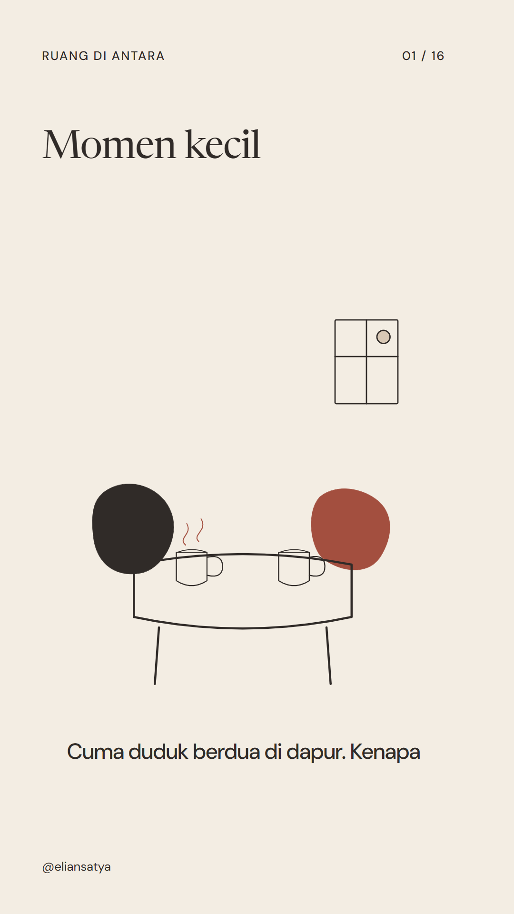
Cuma duduk berdua di dapur. Kenapa momen sekecil itu masih terasa hangat waktu lo ingat lagi?
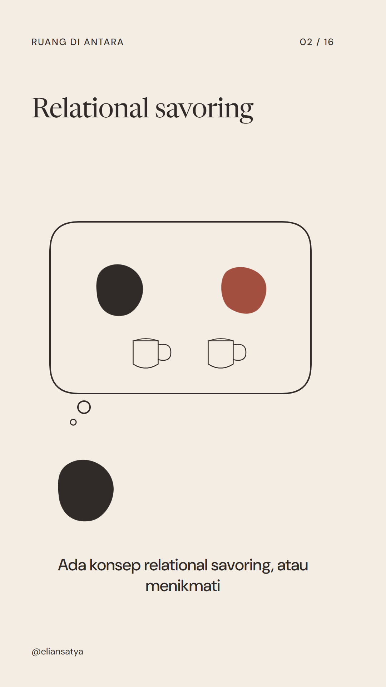
Ada konsep relational savoring, atau menikmati kembali momen kedekatan dalam hubungan.
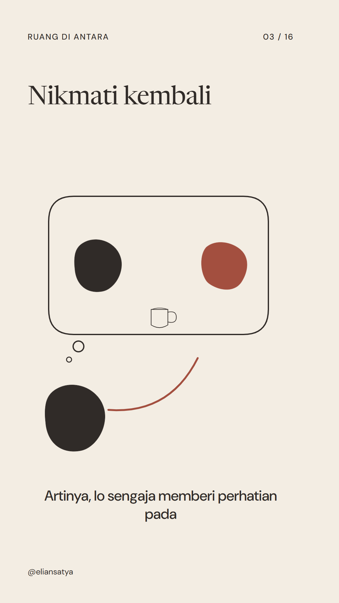
Artinya, lo sengaja memberi perhatian pada pengalaman positif ketika merasa terhubung dengan seseorang.
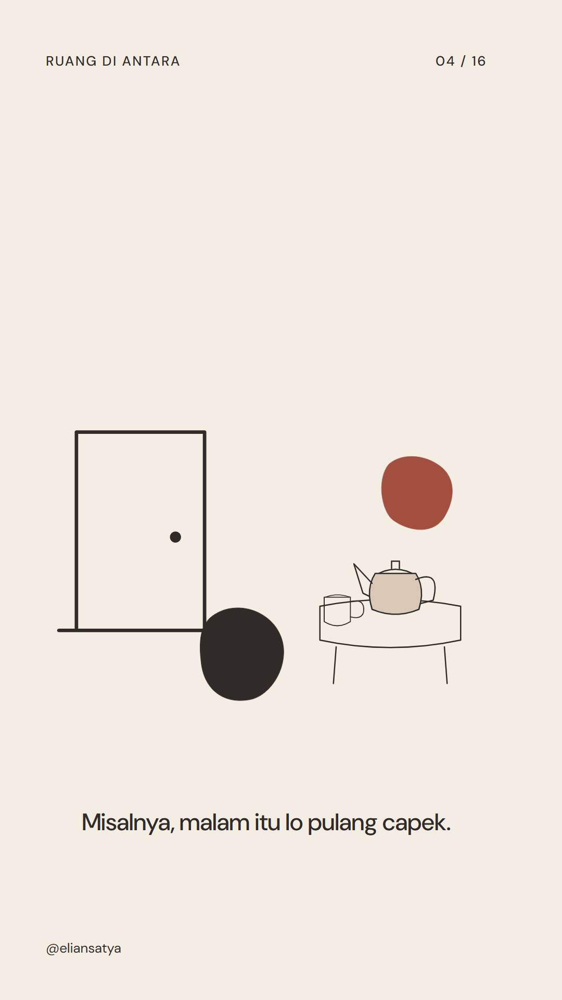
Misalnya, malam itu lo pulang capek. Dia menemani lo bikin teh.
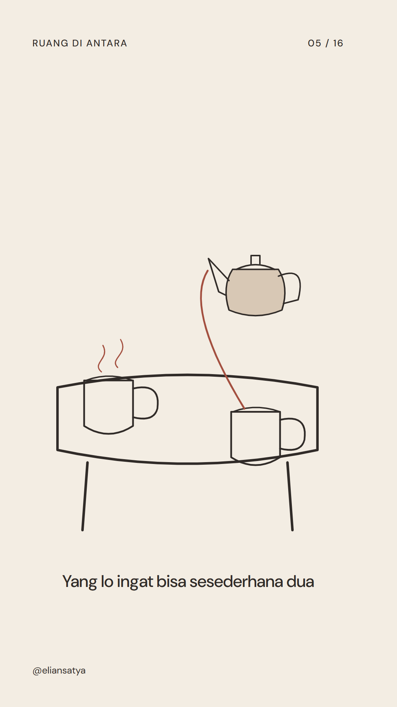
Yang lo ingat bisa sesederhana dua cangkir, suara air, dan dia duduk di sebelah.
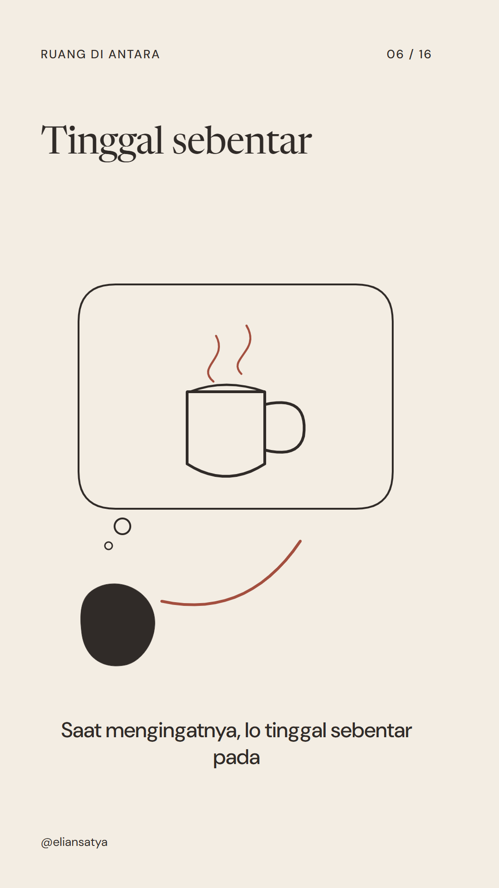
Saat mengingatnya, lo tinggal sebentar pada detail itu, sambil memperhatikan perasaan yang muncul.
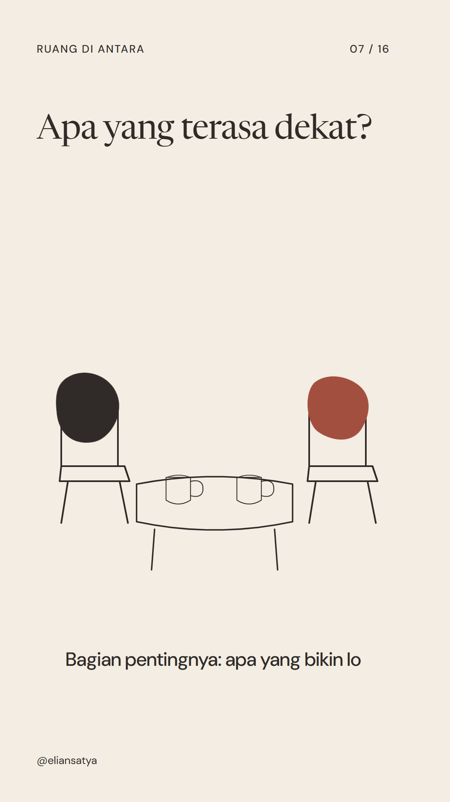
Bagian pentingnya: apa yang bikin lo merasa dekat dalam kejadian itu?
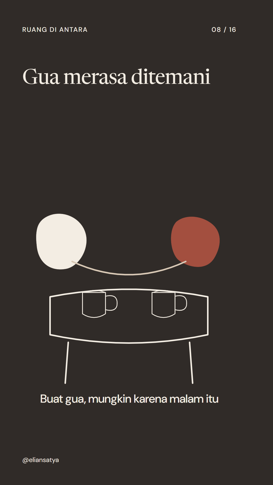
Buat gua, mungkin karena malam itu gua merasa ditemani, tanpa harus banyak ngomong.
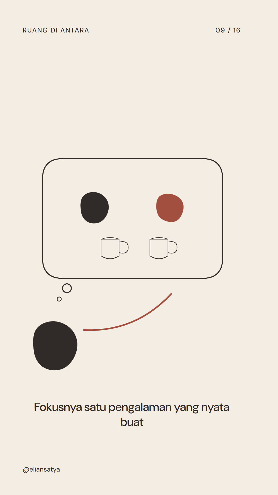
Fokusnya satu pengalaman yang nyata buat lo, dengan makna yang lo rasakan sendiri.
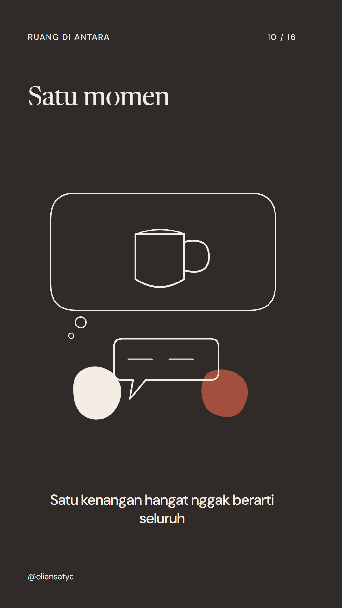
Satu kenangan hangat nggak berarti seluruh hubungan selalu baik, atau masalahnya sudah selesai.
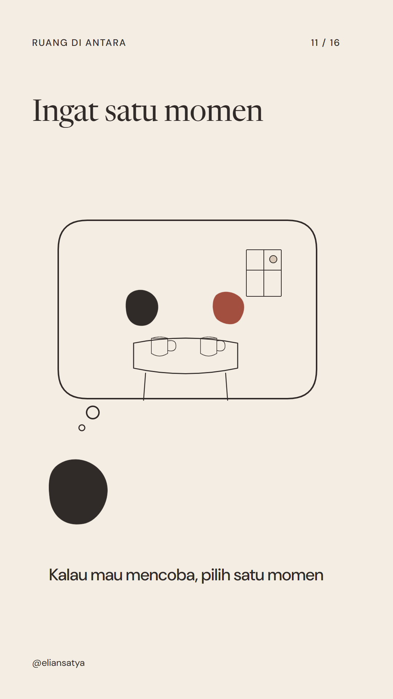
Kalau mau mencoba, pilih satu momen kecil ketika lo merasa dekat.
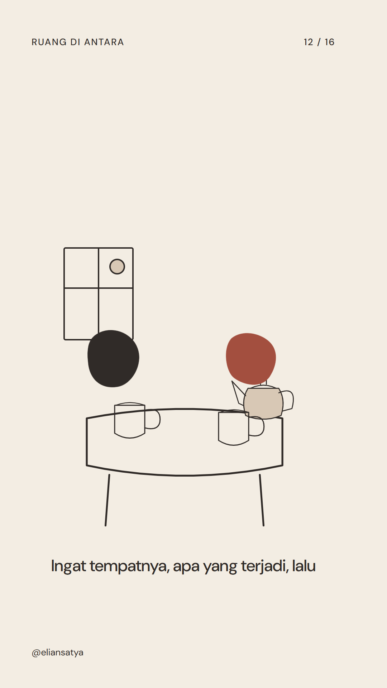
Ingat tempatnya, apa yang terjadi, lalu perhatikan bagian yang terasa berarti buat lo.
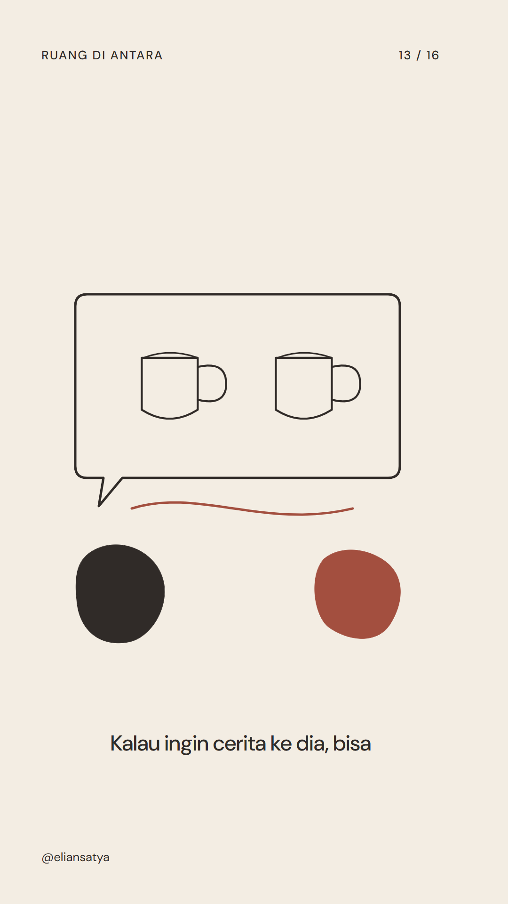
Kalau ingin cerita ke dia, bisa bilang: gua suka waktu kita bikin teh kemarin.
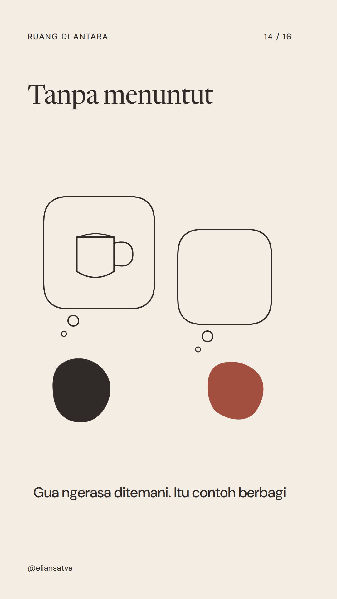
Gua ngerasa ditemani. Itu contoh berbagi pengalaman lo, tanpa menuntut perasaan yang sama.
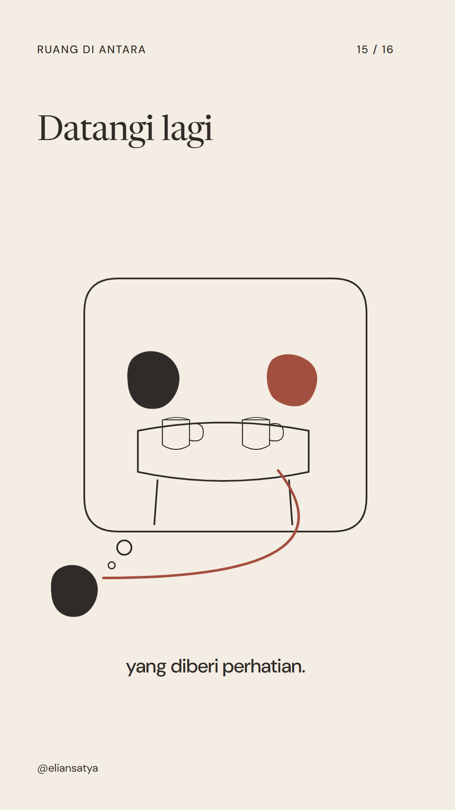
Jadi, momen sederhana tadi bisa lo datangi lagi lewat ingatan yang diberi perhatian.
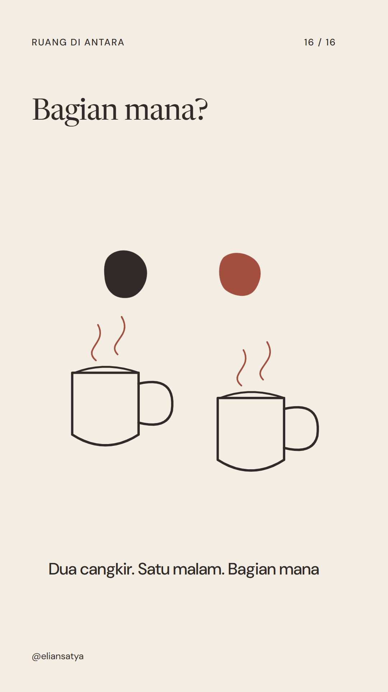
Dua cangkir. Satu malam. Bagian mana yang masih terasa hangat buat lo?